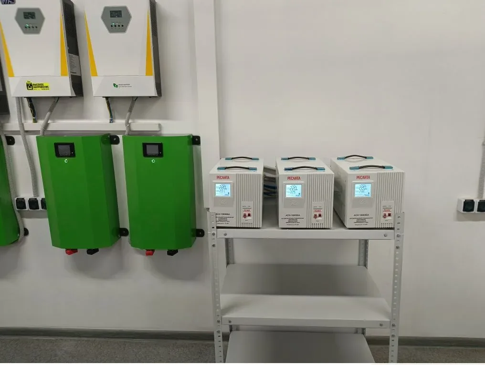

Производство / силовое подключение
Подключение станков и оборудования в производственном помещении
Новый станок нельзя безопасно подключить только по значению мощности из объявления или паспорта. До монтажа нужно проверить ввод объекта, пусковые токи, кабельную линию, защиту, заземление, способ управления и влияние оборудования на остальную сеть.

Что проверяют до подключения оборудования
Начинаем с исходных данных оборудования: напряжение, количество фаз, номинальная мощность, рабочий и пусковой ток, режим работы, требования производителя. Для станков с двигателями, нагревателями, частотными преобразователями или собственной автоматикой этих данных недостаточно заменять предположениями.
На объекте проверяем выделенную и фактически доступную мощность, вводной щит, существующие нагрузки и возможность проложить отдельную линию. Если мощность на бумаге есть, но ввод, кабель или распределительный щит не рассчитаны на новую нагрузку, сначала требуется доработка системы.
Почему станку обычно нужна отдельная линия
Отдельная линия позволяет выбрать кабель и защитный аппарат под конкретную нагрузку, локально отключать оборудование для обслуживания и не оставлять без питания соседние участки. Это особенно важно для трехфазных станков, компрессоров, насосов, сварочного оборудования и установок с заметным пусковым током.
Маршрут линии выбирают с учетом длины, способа прокладки, температуры, механических воздействий и соседних инженерных систем. На производстве часто используются лотки, металлические конструкции и спуски к оборудованию, поэтому заранее определяют точки крепления и защиту кабеля в рабочей зоне.
Защита, отключение и заземление
Автоматический выключатель должен защищать линию и учитывать характер нагрузки. Для оборудования с электродвигателем или преобразователем производитель может задавать дополнительные требования к аппаратам, электромагнитной совместимости и устройствам защитного отключения.
У оборудования должен быть доступный способ отключения, а металлические корпуса и связанные конструкции подключают к системе защитного заземления по проектному решению. Схему нейтрали и защитных проводников проверяют до пуска, а не после появления срабатываний или напряжения на корпусе.
Когда требуется доработка распределительного щита
Доработка нужна, если в щите нет свободного места, установленная аппаратура не соответствует новой нагрузке, отсутствует понятная маркировка или вводная часть работает близко к пределу. Иногда достаточно добавить отдельную защищенную линию, в других случаях рациональнее установить новый распределительный щит для производственного участка.
При нескольких станках учитывают одновременность работы и последовательность пуска. Это позволяет не завышать решение без необходимости, но и не получить регулярные отключения при одновременном запуске оборудования.
Как организовать работы на действующем производстве
До начала монтажа определяем рабочие зоны, время допустимых отключений и ответственного со стороны заказчика. Кабельные трассы и щит можно подготовить без остановки участка, а переключение выполнить в согласованное окно.
Перед подачей питания сверяем маркировку, подключение фаз и защитных проводников, положение аппаратов и готовность самого оборудования. Первый запуск выполняют совместно с ответственным за станок или представителем поставщика, если этого требуют документация и гарантийные условия.
Что входит в результат электромонтажных работ
- Проверка исходных данных и существующей системы электроснабжения.
- Отдельная кабельная линия или подготовка группы линий под оборудование.
- Аппараты защиты, коммутации и при необходимости доработка щита.
- Прокладка трассы, ввод в оборудование и понятная маркировка.
- Согласованный порядок отключения, подключения и первичного запуска.
- Фиксация выполненных изменений для дальнейшего обслуживания.
Что прислать для предварительного расчета
- Фото шильдика, паспорт или руководство на оборудование.
- Мощность, напряжение, количество фаз и сведения о пусковом токе.
- Фото существующего щита и вводных аппаратов.
- Примерное расстояние от щита до места установки станка.
- Фото предполагаемой кабельной трассы и рабочей зоны.
- Адрес объекта в Екатеринбурге или Свердловской области и желаемый срок запуска.
Для комплексных работ смотрите страницу электромонтажа производственных помещений. Если требуется отдельный силовой или управляющий шкаф, изучите услугу сборки ВРУ, АВР и ЩУ.
Нужно подключить станок или производственное оборудование?
Пришлите фото шильдика, существующего щита, места установки и примерную длину трассы. Проверим, каких данных не хватает для предварительного расчета.
Оставить заявку